ca-_-1280-normal-cold
Draw: 175.742 ms; recovery: none ms; first captured nonuniform frame: 339.271 ms. Raw timings


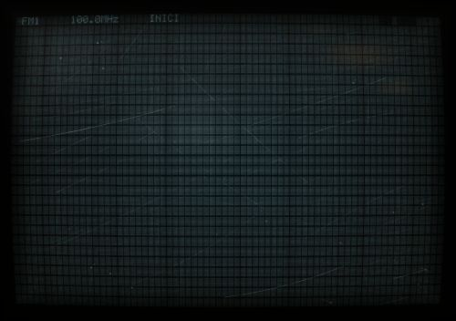
Times are milliseconds from the first head-gate mark. “Draw” is the renderer acknowledgement; compositor frames independently show when the display becomes visible. Pre-navigation frames normally have negative timestamps. Two traces retain an all-white outgoing browser snapshot just after the gate mark and before the first new-document near-black surface; per-case raw timings label them separately. A deadline recovery is an intended plain-page branch, not successful startup. Raw compressed Chrome traces and per-frame timings sit beside each case.
Draw: 175.742 ms; recovery: none ms; first captured nonuniform frame: 339.271 ms. Raw timings

Draw: 201.038 ms; recovery: none ms; first captured nonuniform frame: 337.682 ms. Raw timings


Draw: 179.83 ms; recovery: none ms; first captured nonuniform frame: 307.822 ms. Raw timings


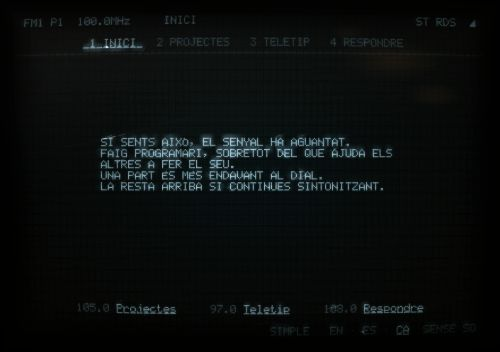
Draw: 203.464 ms; recovery: none ms; first captured nonuniform frame: 351.783 ms. Raw timings


Draw: 173.036 ms; recovery: none ms; first captured nonuniform frame: 328.885 ms. Raw timings


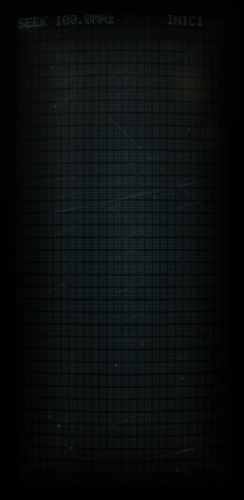
Draw: 117.898 ms; recovery: none ms; first captured nonuniform frame: 264.463 ms. Raw timings


Draw: 147.827 ms; recovery: none ms; first captured nonuniform frame: 299.117 ms. Raw timings


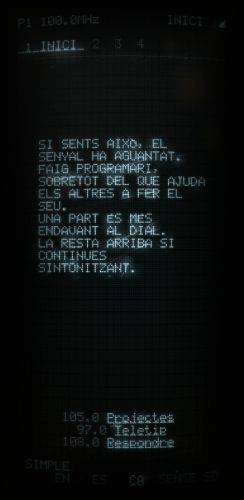
Draw: 163.245 ms; recovery: none ms; first captured nonuniform frame: 326.693 ms. Raw timings


Draw: 175.469 ms; recovery: none ms; first captured nonuniform frame: 318.772 ms. Raw timings


Draw: 234.785 ms; recovery: none ms; first captured nonuniform frame: 409.823 ms. Raw timings


Draw: 184.941 ms; recovery: none ms; first captured nonuniform frame: 320.938 ms. Raw timings


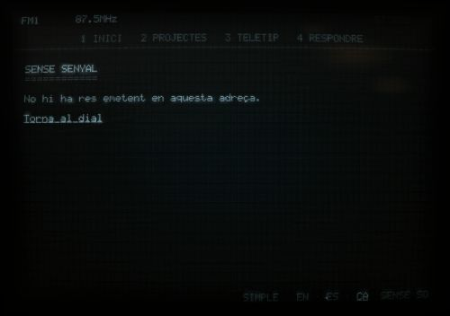
Draw: 167.415 ms; recovery: none ms; first captured nonuniform frame: 324.804 ms. Raw timings


Draw: 181.459 ms; recovery: none ms; first captured nonuniform frame: 324.113 ms. Raw timings


Draw: 118.234 ms; recovery: none ms; first captured nonuniform frame: 270.567 ms. Raw timings


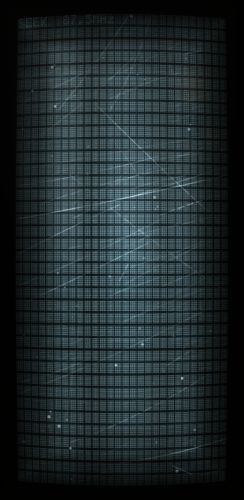
Draw: 126.315 ms; recovery: none ms; first captured nonuniform frame: 305.186 ms. Raw timings


Draw: 116.98 ms; recovery: none ms; first captured nonuniform frame: 282.357 ms. Raw timings


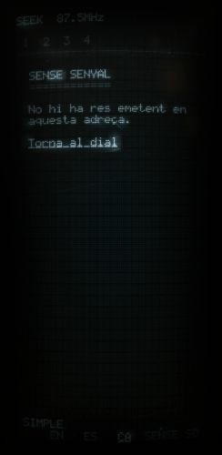
Draw: 145.465 ms; recovery: none ms; first captured nonuniform frame: 294.416 ms. Raw timings


Draw: 150.24 ms; recovery: none ms; first captured nonuniform frame: 317.035 ms. Raw timings


Draw: 167.118 ms; recovery: none ms; first captured nonuniform frame: 324.164 ms. Raw timings


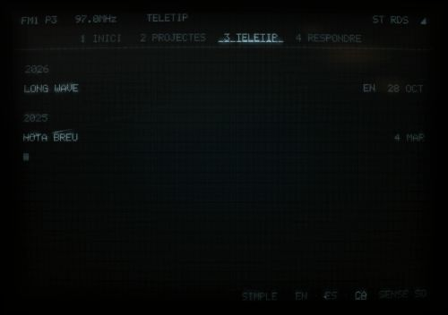

Draw: 207.215 ms; recovery: none ms; first captured nonuniform frame: 367.224 ms. Raw timings


Draw: 145.011 ms; recovery: none ms; first captured nonuniform frame: 306.374 ms. Raw timings


Draw: 116.007 ms; recovery: none ms; first captured nonuniform frame: 265.849 ms. Raw timings


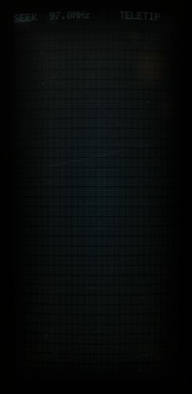
Draw: 135.742 ms; recovery: none ms; first captured nonuniform frame: 300.825 ms. Raw timings


Draw: 121.254 ms; recovery: none ms; first captured nonuniform frame: 259.947 ms. Raw timings


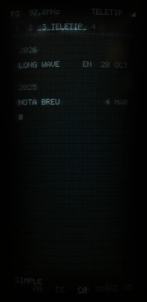
Draw: 195.098 ms; recovery: none ms; first captured nonuniform frame: 354.296 ms. Raw timings


Draw: 152.134 ms; recovery: none ms; first captured nonuniform frame: 282.017 ms. Raw timings


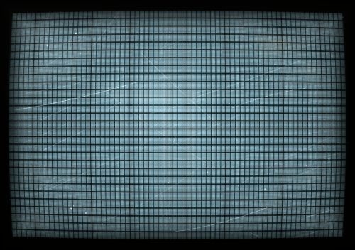

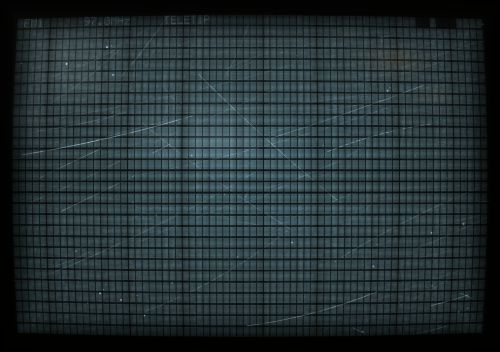
Draw: 185.641 ms; recovery: none ms; first captured nonuniform frame: 346.219 ms. Raw timings


Draw: 206.253 ms; recovery: none ms; first captured nonuniform frame: 346.112 ms. Raw timings


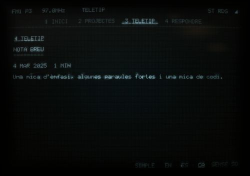
Draw: 137.574 ms; recovery: none ms; first captured nonuniform frame: 318.241 ms. Raw timings


Draw: 114.126 ms; recovery: none ms; first captured nonuniform frame: 247.884 ms. Raw timings


Draw: 127.063 ms; recovery: none ms; first captured nonuniform frame: 278.845 ms. Raw timings


Draw: 171.184 ms; recovery: none ms; first captured nonuniform frame: 325.384 ms. Raw timings


Draw: 173.059 ms; recovery: none ms; first captured nonuniform frame: 321.277 ms. Raw timings


Draw: 197.965 ms; recovery: none ms; first captured nonuniform frame: 379.794 ms. Raw timings


Draw: 177.263 ms; recovery: none ms; first captured nonuniform frame: 314.802 ms. Raw timings


Draw: 159.275 ms; recovery: none ms; first captured nonuniform frame: 313.211 ms. Raw timings


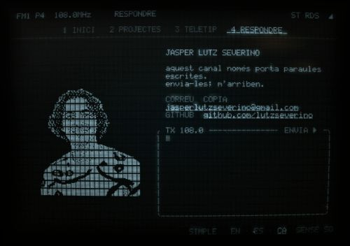
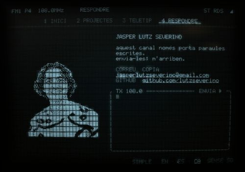
Draw: 154.234 ms; recovery: none ms; first captured nonuniform frame: 312.163 ms. Raw timings


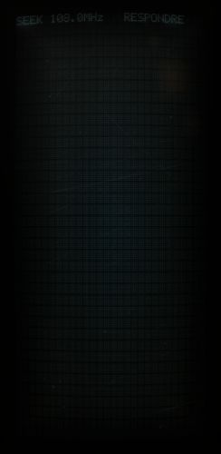
Draw: 112.762 ms; recovery: none ms; first captured nonuniform frame: 283.377 ms. Raw timings


Draw: 130.497 ms; recovery: none ms; first captured nonuniform frame: 278.294 ms. Raw timings


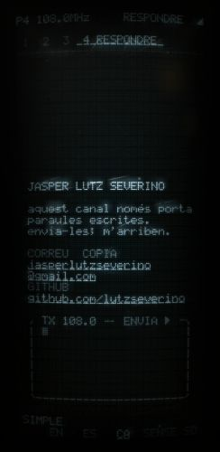
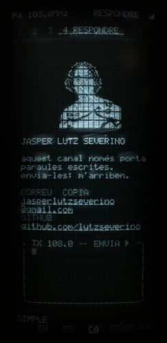
Draw: 126.952 ms; recovery: none ms; first captured nonuniform frame: 296.647 ms. Raw timings


Draw: 164.248 ms; recovery: none ms; first captured nonuniform frame: 333.57 ms. Raw timings


Draw: 201.083 ms; recovery: none ms; first captured nonuniform frame: 340.576 ms. Raw timings


Draw: 185.622 ms; recovery: none ms; first captured nonuniform frame: 334.56 ms. Raw timings


Draw: 214.593 ms; recovery: none ms; first captured nonuniform frame: 371.704 ms. Raw timings


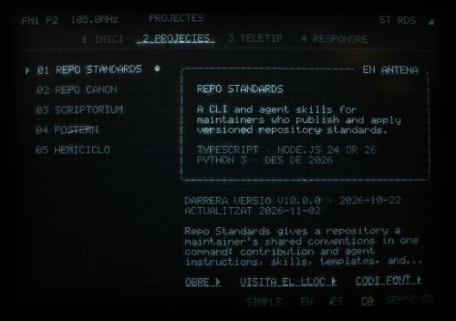
Draw: 171.076 ms; recovery: none ms; first captured nonuniform frame: 355.287 ms. Raw timings


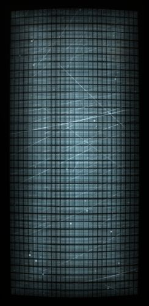


Draw: 121.99 ms; recovery: none ms; first captured nonuniform frame: 267.815 ms. Raw timings


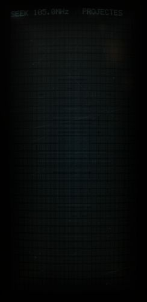
Draw: 168.784 ms; recovery: none ms; first captured nonuniform frame: 324.595 ms. Raw timings


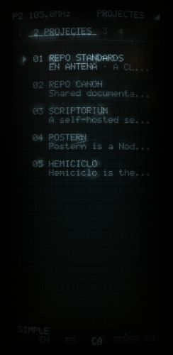
Draw: 156.636 ms; recovery: none ms; first captured nonuniform frame: 324.501 ms. Raw timings


Draw: 163.079 ms; recovery: none ms; first captured nonuniform frame: 336.38 ms. Raw timings


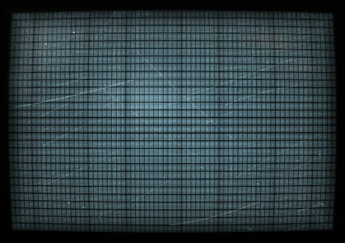


Draw: 210.505 ms; recovery: none ms; first captured nonuniform frame: 358.929 ms. Raw timings


Draw: 182.818 ms; recovery: none ms; first captured nonuniform frame: 321.933 ms. Raw timings


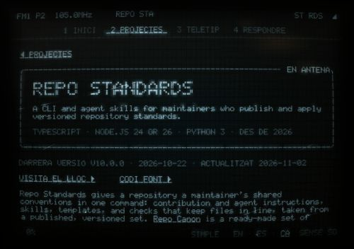
Draw: 214.271 ms; recovery: none ms; first captured nonuniform frame: 363.728 ms. Raw timings


Draw: 121.613 ms; recovery: none ms; first captured nonuniform frame: 270.439 ms. Raw timings


Draw: 118.157 ms; recovery: none ms; first captured nonuniform frame: 280.699 ms. Raw timings


Draw: 154.232 ms; recovery: none ms; first captured nonuniform frame: 320.265 ms. Raw timings


Draw: 163.614 ms; recovery: none ms; first captured nonuniform frame: 333.961 ms. Raw timings


Draw: 173.71 ms; recovery: none ms; first captured nonuniform frame: 327.913 ms. Raw timings


Draw: 185.939 ms; recovery: none ms; first captured nonuniform frame: 371.937 ms. Raw timings


Draw: 171.841 ms; recovery: none ms; first captured nonuniform frame: 327.843 ms. Raw timings


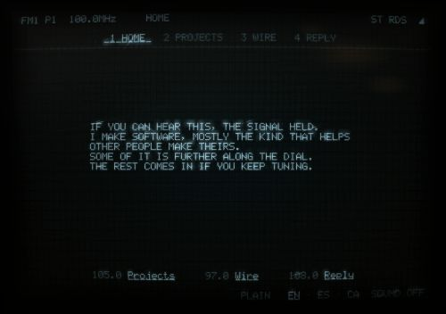

Draw: 208.879 ms; recovery: none ms; first captured nonuniform frame: 355.44 ms. Raw timings


Draw: 147.999 ms; recovery: none ms; first captured nonuniform frame: 321.651 ms. Raw timings


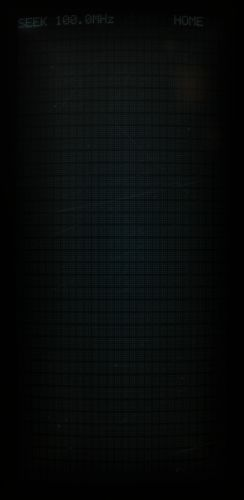
Draw: 115.32 ms; recovery: none ms; first captured nonuniform frame: 256.088 ms. Raw timings


Draw: 175.509 ms; recovery: none ms; first captured nonuniform frame: 336.574 ms. Raw timings


Draw: 170.571 ms; recovery: none ms; first captured nonuniform frame: 340.261 ms. Raw timings


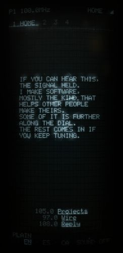
Draw: 187.834 ms; recovery: none ms; first captured nonuniform frame: 344.669 ms. Raw timings


Draw: 209.53 ms; recovery: none ms; first captured nonuniform frame: 362.378 ms. Raw timings


Draw: 176.763 ms; recovery: none ms; first captured nonuniform frame: 308.077 ms. Raw timings


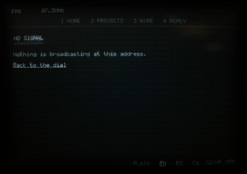
Draw: 200.625 ms; recovery: none ms; first captured nonuniform frame: 349.594 ms. Raw timings


Draw: 148.415 ms; recovery: none ms; first captured nonuniform frame: 320.662 ms. Raw timings


Draw: 111.708 ms; recovery: none ms; first captured nonuniform frame: 262.345 ms. Raw timings


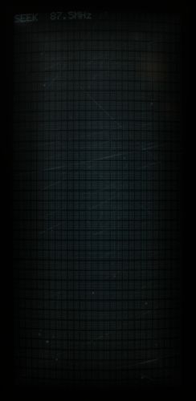
Draw: 126.225 ms; recovery: none ms; first captured nonuniform frame: 280.225 ms. Raw timings


Draw: 157.174 ms; recovery: none ms; first captured nonuniform frame: 297.796 ms. Raw timings


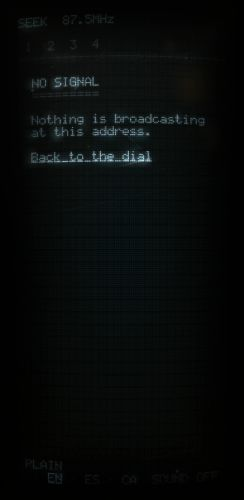
Draw: 189.42 ms; recovery: none ms; first captured nonuniform frame: 339.41 ms. Raw timings


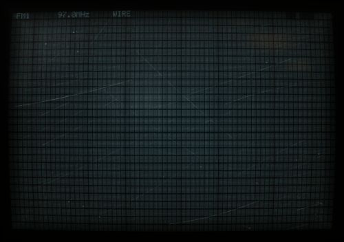
Draw: 200.406 ms; recovery: none ms; first captured nonuniform frame: 361.596 ms. Raw timings


Draw: 188.15 ms; recovery: none ms; first captured nonuniform frame: 338.957 ms. Raw timings


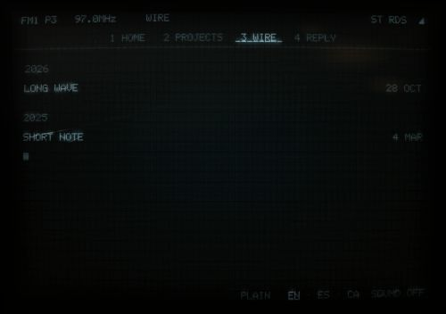
Draw: 198.877 ms; recovery: none ms; first captured nonuniform frame: 341.527 ms. Raw timings


Draw: 135.821 ms; recovery: none ms; first captured nonuniform frame: 312.641 ms. Raw timings


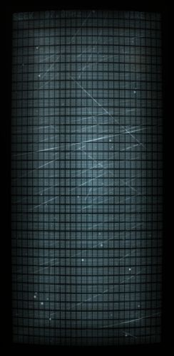

Draw: 126.223 ms; recovery: none ms; first captured nonuniform frame: 269.506 ms. Raw timings


Draw: 125.712 ms; recovery: none ms; first captured nonuniform frame: 286.72 ms. Raw timings


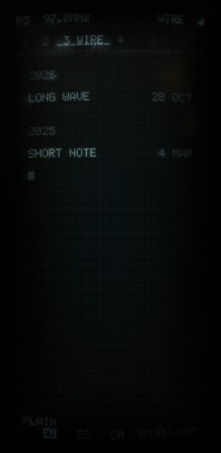
Draw: 160.319 ms; recovery: none ms; first captured nonuniform frame: 325.703 ms. Raw timings


Draw: 158.059 ms; recovery: none ms; first captured nonuniform frame: 333.676 ms. Raw timings


Draw: 194.363 ms; recovery: none ms; first captured nonuniform frame: 341.877 ms. Raw timings


Draw: 199.55 ms; recovery: none ms; first captured nonuniform frame: 321.008 ms. Raw timings


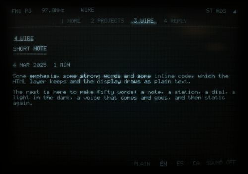
Draw: 219.279 ms; recovery: none ms; first captured nonuniform frame: 375.903 ms. Raw timings


Draw: 139.161 ms; recovery: none ms; first captured nonuniform frame: 333.652 ms. Raw timings


Draw: 111.539 ms; recovery: none ms; first captured nonuniform frame: 250.08 ms. Raw timings


Draw: 141.014 ms; recovery: none ms; first captured nonuniform frame: 307.047 ms. Raw timings


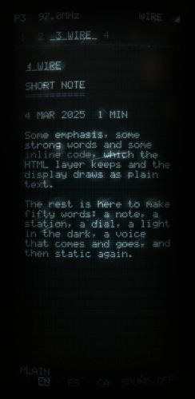

Draw: 168.813 ms; recovery: none ms; first captured nonuniform frame: 318.434 ms. Raw timings


Draw: 186.22 ms; recovery: none ms; first captured nonuniform frame: 355.389 ms. Raw timings


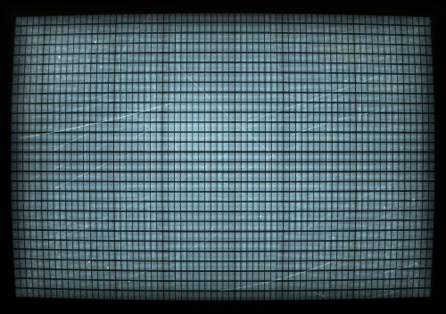

Draw: 198.568 ms; recovery: none ms; first captured nonuniform frame: 333.128 ms. Raw timings


Draw: 176.138 ms; recovery: none ms; first captured nonuniform frame: 306.38 ms. Raw timings


Draw: 177.863 ms; recovery: none ms; first captured nonuniform frame: 300.112 ms. Raw timings


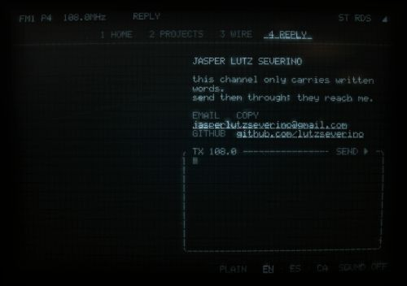

Draw: 130.502 ms; recovery: none ms; first captured nonuniform frame: 306.296 ms. Raw timings


Draw: 115.84 ms; recovery: none ms; first captured nonuniform frame: 263.358 ms. Raw timings


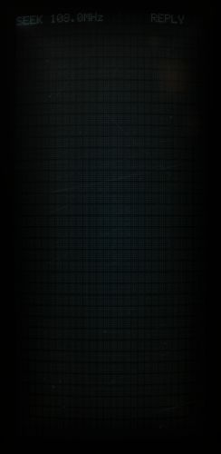
Draw: 146.838 ms; recovery: none ms; first captured nonuniform frame: 306.53 ms. Raw timings


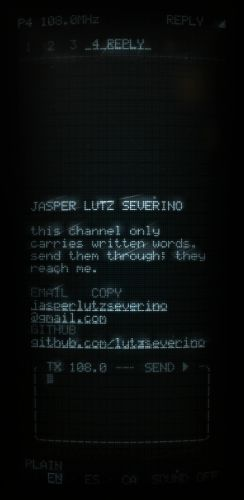
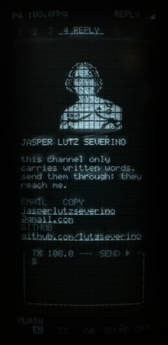
Draw: 119.377 ms; recovery: none ms; first captured nonuniform frame: 265.94 ms. Raw timings


Draw: 153.864 ms; recovery: none ms; first captured nonuniform frame: 306.814 ms. Raw timings


Draw: 185.099 ms; recovery: none ms; first captured nonuniform frame: 345.775 ms. Raw timings


Draw: 183.044 ms; recovery: none ms; first captured nonuniform frame: 342.299 ms. Raw timings


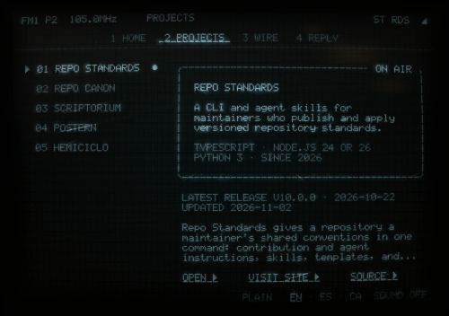
Draw: 215.23 ms; recovery: none ms; first captured nonuniform frame: 340.091 ms. Raw timings


Draw: 142.999 ms; recovery: none ms; first captured nonuniform frame: 303.486 ms. Raw timings


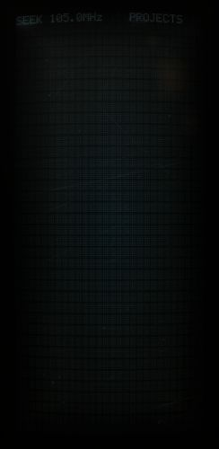
Draw: 171.914 ms; recovery: none ms; first captured nonuniform frame: 323.802 ms. Raw timings


Draw: 132.716 ms; recovery: none ms; first captured nonuniform frame: 292.252 ms. Raw timings


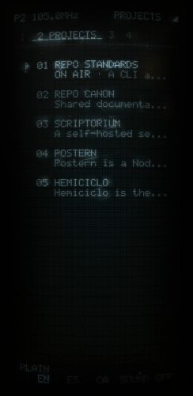

Draw: 173.438 ms; recovery: none ms; first captured nonuniform frame: 335.874 ms. Raw timings


Draw: 157.138 ms; recovery: none ms; first captured nonuniform frame: 292.701 ms. Raw timings


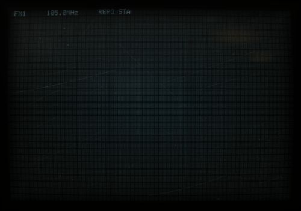
Draw: 185.217 ms; recovery: none ms; first captured nonuniform frame: 362.427 ms. Raw timings


Draw: 174.298 ms; recovery: none ms; first captured nonuniform frame: 315.114 ms. Raw timings


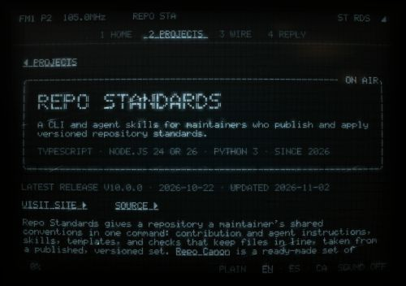

Draw: 218.917 ms; recovery: none ms; first captured nonuniform frame: 375.048 ms. Raw timings


Draw: 145.39 ms; recovery: none ms; first captured nonuniform frame: 299.638 ms. Raw timings


Draw: 116.059 ms; recovery: none ms; first captured nonuniform frame: 269.151 ms. Raw timings


Draw: 150.555 ms; recovery: none ms; first captured nonuniform frame: 288.54 ms. Raw timings


Draw: 188.946 ms; recovery: none ms; first captured nonuniform frame: 340.866 ms. Raw timings


Draw: 179.749 ms; recovery: none ms; first captured nonuniform frame: 345.313 ms. Raw timings


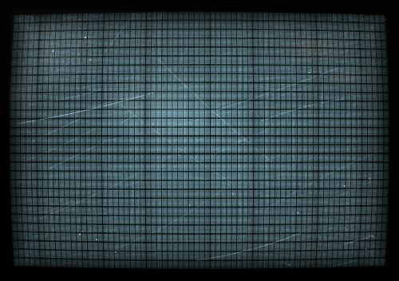


Draw: 211.053 ms; recovery: none ms; first captured nonuniform frame: 365.907 ms. Raw timings


Draw: 167.828 ms; recovery: none ms; first captured nonuniform frame: 312.744 ms. Raw timings


Draw: 208.711 ms; recovery: none ms; first captured nonuniform frame: 348.227 ms. Raw timings


Draw: 149.937 ms; recovery: none ms; first captured nonuniform frame: 302.44 ms. Raw timings


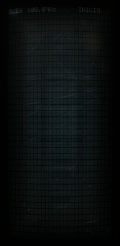
Draw: 152.506 ms; recovery: none ms; first captured nonuniform frame: 321.59 ms. Raw timings


Draw: 132.143 ms; recovery: none ms; first captured nonuniform frame: 319.638 ms. Raw timings


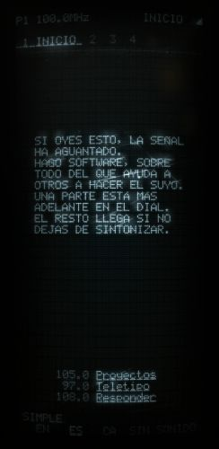

Draw: 164.967 ms; recovery: none ms; first captured nonuniform frame: 350.897 ms. Raw timings


Draw: 176.528 ms; recovery: none ms; first captured nonuniform frame: 328.244 ms. Raw timings


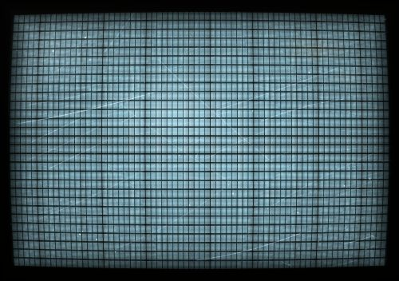
Draw: 185.857 ms; recovery: none ms; first captured nonuniform frame: 343.942 ms. Raw timings


Draw: 171.272 ms; recovery: none ms; first captured nonuniform frame: 320.737 ms. Raw timings


Draw: 237.185 ms; recovery: none ms; first captured nonuniform frame: 388.819 ms. Raw timings


Draw: 136.351 ms; recovery: none ms; first captured nonuniform frame: 326.473 ms. Raw timings


Draw: 113.38 ms; recovery: none ms; first captured nonuniform frame: 254.584 ms. Raw timings


Draw: 159.836 ms; recovery: none ms; first captured nonuniform frame: 317.514 ms. Raw timings


Draw: 111.906 ms; recovery: none ms; first captured nonuniform frame: 264.124 ms. Raw timings


Draw: 180.843 ms; recovery: none ms; first captured nonuniform frame: 359.835 ms. Raw timings


Draw: 195.583 ms; recovery: none ms; first captured nonuniform frame: 359.204 ms. Raw timings


Draw: 186.091 ms; recovery: none ms; first captured nonuniform frame: 336.94 ms. Raw timings


Draw: 222.446 ms; recovery: none ms; first captured nonuniform frame: 368.862 ms. Raw timings


Draw: 135.668 ms; recovery: none ms; first captured nonuniform frame: 297.888 ms. Raw timings


Draw: 167.858 ms; recovery: none ms; first captured nonuniform frame: 341.108 ms. Raw timings


Draw: 125.926 ms; recovery: none ms; first captured nonuniform frame: 287.924 ms. Raw timings


Draw: 161.842 ms; recovery: none ms; first captured nonuniform frame: 333.489 ms. Raw timings


Draw: 181.476 ms; recovery: none ms; first captured nonuniform frame: 343.461 ms. Raw timings


Draw: 206.691 ms; recovery: none ms; first captured nonuniform frame: 384.73 ms. Raw timings


Draw: 182.056 ms; recovery: none ms; first captured nonuniform frame: 344.889 ms. Raw timings


Draw: 198.832 ms; recovery: none ms; first captured nonuniform frame: 353.656 ms. Raw timings


Draw: 157.523 ms; recovery: none ms; first captured nonuniform frame: 309.7 ms. Raw timings


Draw: 114.939 ms; recovery: none ms; first captured nonuniform frame: 282.431 ms. Raw timings


Draw: 122.917 ms; recovery: none ms; first captured nonuniform frame: 282.17 ms. Raw timings


Draw: 170.517 ms; recovery: none ms; first captured nonuniform frame: 329.475 ms. Raw timings


Draw: 165.48 ms; recovery: none ms; first captured nonuniform frame: 302.663 ms. Raw timings


Draw: 200.981 ms; recovery: none ms; first captured nonuniform frame: 374.452 ms. Raw timings


Draw: 203.429 ms; recovery: none ms; first captured nonuniform frame: 336.815 ms. Raw timings


Draw: 189.976 ms; recovery: none ms; first captured nonuniform frame: 347.453 ms. Raw timings


Draw: 141.689 ms; recovery: none ms; first captured nonuniform frame: 337.622 ms. Raw timings


Draw: 129.519 ms; recovery: none ms; first captured nonuniform frame: 264.339 ms. Raw timings


Draw: 130.789 ms; recovery: none ms; first captured nonuniform frame: 277.953 ms. Raw timings


Draw: 191.896 ms; recovery: none ms; first captured nonuniform frame: 355.006 ms. Raw timings


Draw: 180.753 ms; recovery: none ms; first captured nonuniform frame: 338.573 ms. Raw timings


Draw: 197.455 ms; recovery: none ms; first captured nonuniform frame: 343.08 ms. Raw timings


Draw: 172.539 ms; recovery: none ms; first captured nonuniform frame: 328.295 ms. Raw timings


Draw: 219.118 ms; recovery: none ms; first captured nonuniform frame: 368.039 ms. Raw timings


Draw: 148.119 ms; recovery: none ms; first captured nonuniform frame: 304.148 ms. Raw timings


Draw: 124.112 ms; recovery: none ms; first captured nonuniform frame: 270.598 ms. Raw timings


Draw: 136.134 ms; recovery: none ms; first captured nonuniform frame: 273.025 ms. Raw timings


Draw: 167.589 ms; recovery: none ms; first captured nonuniform frame: 342.074 ms. Raw timings


Draw: 191.271 ms; recovery: none ms; first captured nonuniform frame: 375.114 ms. Raw timings


Draw: 153.298 ms; recovery: none ms; first captured nonuniform frame: 291.697 ms. Raw timings


Draw: 199.192 ms; recovery: none ms; first captured nonuniform frame: 348.625 ms. Raw timings


Draw: 199.462 ms; recovery: none ms; first captured nonuniform frame: 339.626 ms. Raw timings


Draw: 133.053 ms; recovery: none ms; first captured nonuniform frame: 284.769 ms. Raw timings


Draw: 118.397 ms; recovery: none ms; first captured nonuniform frame: 280.699 ms. Raw timings


Draw: 136.636 ms; recovery: none ms; first captured nonuniform frame: 294.539 ms. Raw timings


Draw: 170.086 ms; recovery: none ms; first captured nonuniform frame: 328.634 ms. Raw timings


Draw: 168.468 ms; recovery: none ms; first captured nonuniform frame: 350.525 ms. Raw timings


Draw: 219.841 ms; recovery: none ms; first captured nonuniform frame: 384.454 ms. Raw timings


Draw: 155.663 ms; recovery: none ms; first captured nonuniform frame: 323.555 ms. Raw timings


Draw: 144.162 ms; recovery: none ms; first captured nonuniform frame: 312.625 ms. Raw timings


Draw: 178.046 ms; recovery: none ms; first captured nonuniform frame: 351.455 ms. Raw timings


Draw: 232.033 ms; recovery: none ms; first captured nonuniform frame: 381.445 ms. Raw timings


Draw: 144.269 ms; recovery: none ms; first captured nonuniform frame: 328.72 ms. Raw timings


Draw: 146.583 ms; recovery: none ms; first captured nonuniform frame: 304.158 ms. Raw timings


Draw: 1405.245 ms; recovery: none ms; first captured nonuniform frame: 1587.151 ms. Raw timings


Draw: 1456.461 ms; recovery: none ms; first captured nonuniform frame: 1607.098 ms. Raw timings


Draw: 1310.446 ms; recovery: none ms; first captured nonuniform frame: 1478.28 ms. Raw timings


Draw: 1323.875 ms; recovery: none ms; first captured nonuniform frame: 1496.014 ms. Raw timings


Draw: 1374.922 ms; recovery: none ms; first captured nonuniform frame: 1548.089 ms. Raw timings


Draw: 1423.715 ms; recovery: none ms; first captured nonuniform frame: 1570.291 ms. Raw timings


Draw: 1283.35 ms; recovery: none ms; first captured nonuniform frame: 1468.958 ms. Raw timings


Draw: 1298.215 ms; recovery: none ms; first captured nonuniform frame: 1465.748 ms. Raw timings